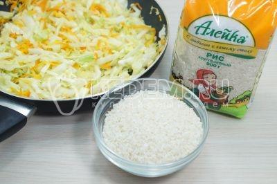

ОПИСАНИЕ Тушёная капуста с рисом на сковороде прекрасно подойдёт для приготовления вкусного обеда или ужина.
Шаг 1
На сковороде разогреть 3 столовые ложки подсолнечного масла.
Шаг 2
Добавить мелко нашинкованную луковицу.
Шаг 3
Добавить тертую морковь.
Шаг 4
Добавить в сковороду 300 грамм нашинкованной белокочанной капусты. Обжарить 7-10 минут, помешивая.
Шаг 5
Добавить 150 грамм круглозёрного риса
Шаг 6
Добавить 1/2 чайной ложки соли и 2 столовые ложки томатной пасты.
Шаг 7
Добавить 300 миллилитров воды и тушить на медленном огне под крышкой 20-25 минут.
Шаг 8
Готовую тушеную капусту с рисом посыпать мелко нашинкованной зеленью.
Шаг 9
Тушеная капуста с рисом на сковороде готова. Разложить по тарелкам и подавать к столу.